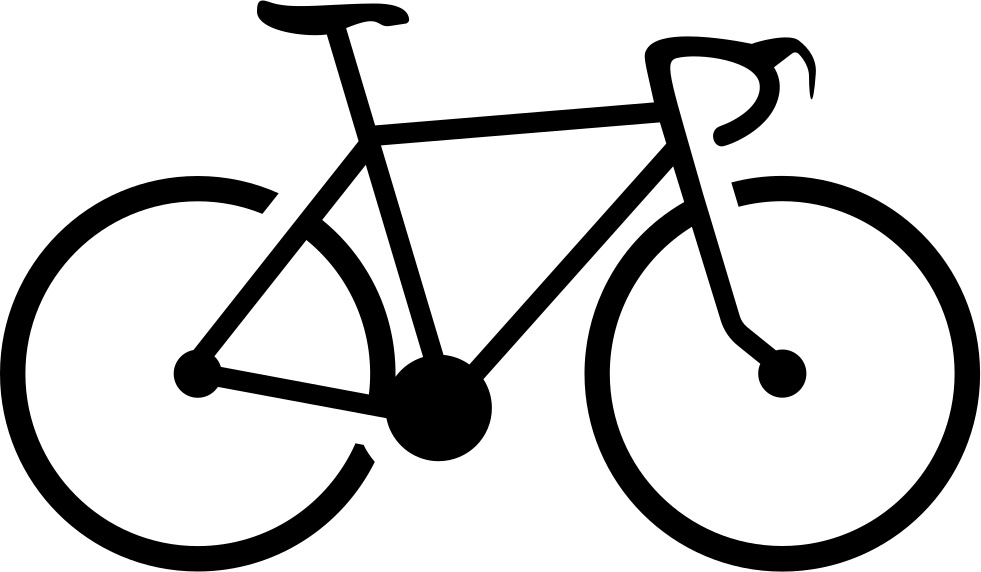

Bicis boardman
las bicis electricas son una buena manera de haceer ejercicios, también para divertirse o pasear.
View Work Creating National Title and Olympic winning road bikes is in our DNA and something we have been doing since 2007. Each of the Boardman road platforms is designed, developed and specced for a specific intended purpose without compromise. Whether it is a cutting-edge aero product or an endurance bike developed with comfort in mind we have the perfect road bike suitable for your needs.
SLR 8.9 CARBON RED
Cutting-edge carbon fibre development at an attainable price point with outstanding performance.
SLR 8.9 CARBON GREY
Cutting-edge carbon fibre development at an attainable price point with outstanding performance.
SLR 8.8 ALLOY
The SLR 8.8 features a full carbon fork saving weight and super reliable shifting from its Shimano Sora componentry.
ADV 8.9
Go anywhere, anytime on any surface. The ADV 8.9 provides the perfect platform for your cycling adventures.
SLR 9.0
The SLR 9.0 offers the outstanding all round capabilities of the SLR frameset using our C8 Carbon.